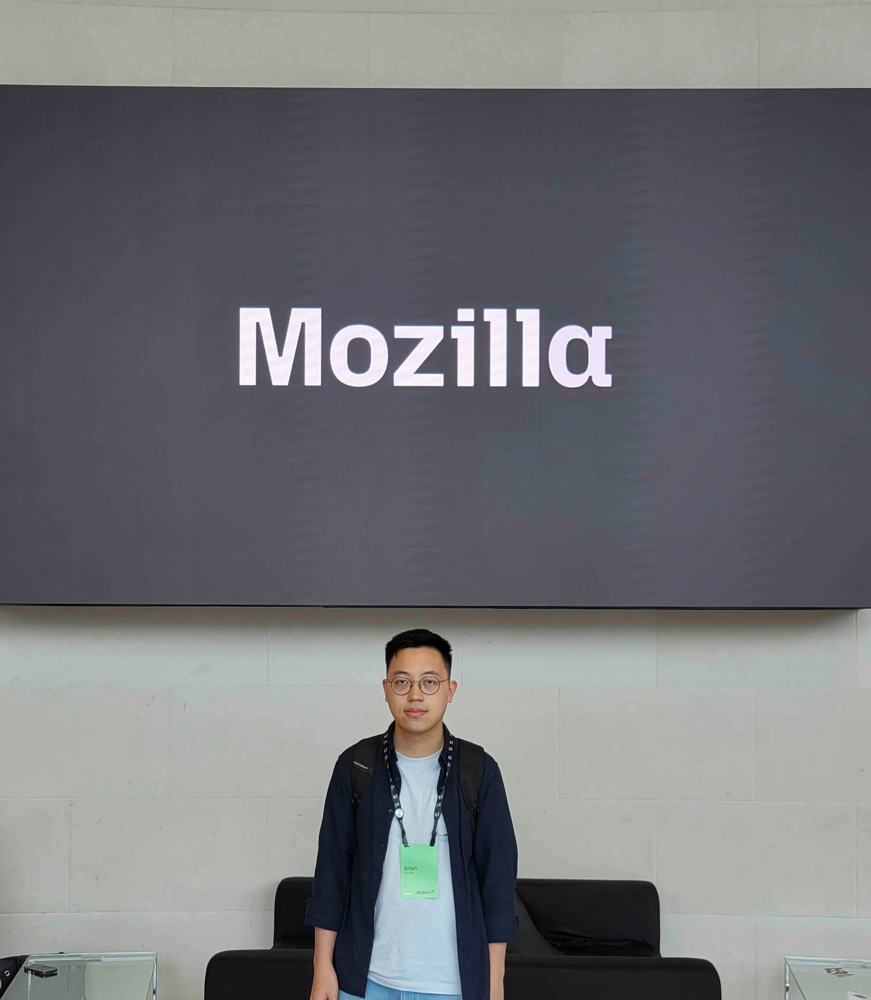
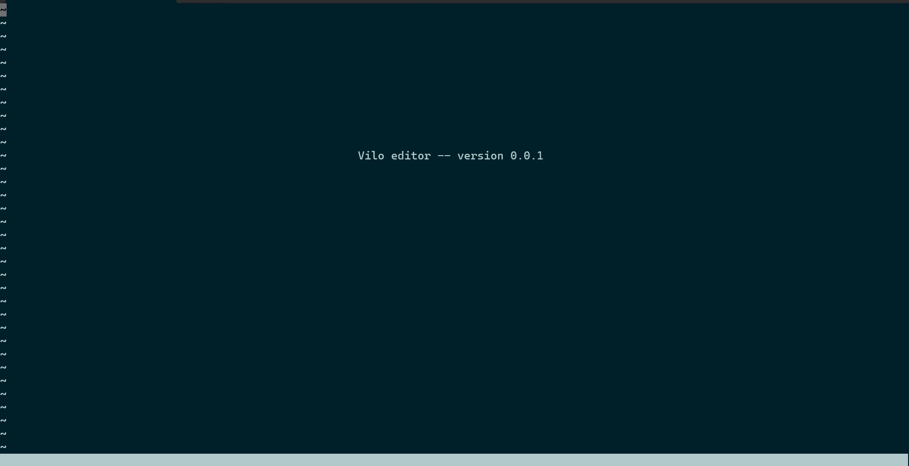
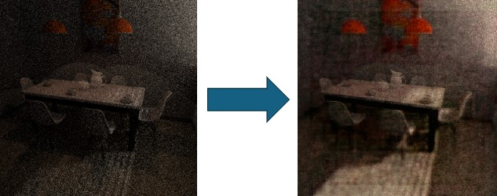
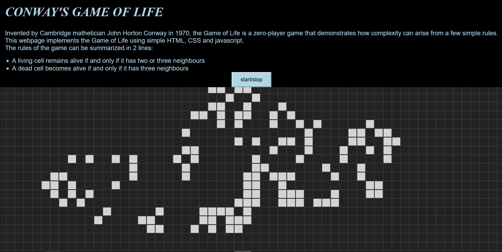
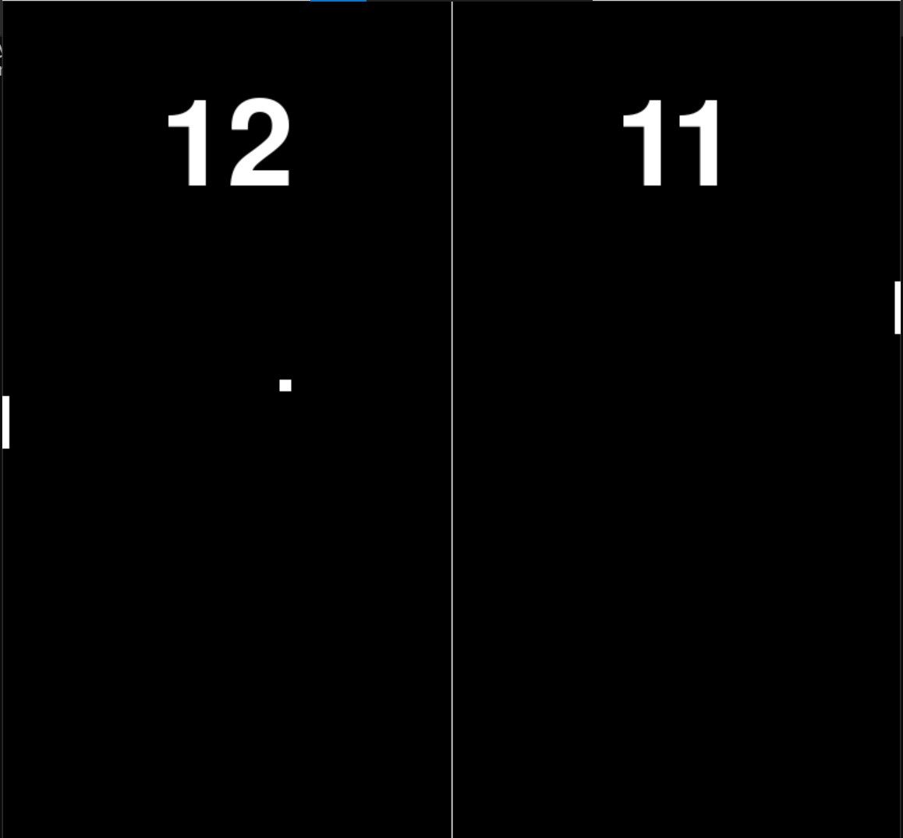

Hi, I'm Brian Tsoi.
This page is a comprehensive directory of descriptions and links to my technical experiences.
For a concise summary, please refer to my resume.
About Me
I am working as a Backend Software Engineer Intern at Mozilla Firefox.
I am also studying Computer Engineering at the University of Toronto (finished 3rd year).
My main interest is in system software, compilers and embedded systems.
I like "interacting with hardware from software's perspective" (borrowed from Linus Torvalds).
Experience
Backend Software Engineer Intern @ Mozilla, OS Integration Team of Firefox
Working on Rust-minidump, the industry-leading open source crash report library used by Mozilla, Microsoft, Sentry and others.
I am adding features to help identify crashes cause by faulty hardware, including inconsistency detection in crash report analysis, and a RAM scanner.
I also occasionally contributed other bug fixes to the vast C++/Rust codebase of Firefox.
Student Project Lead & Software Developer @ UofT Spark Design Team
Managing the DinoJump project with a team of 10 alongside with fellow project lead, Alexander Lay.
The Spark Design Team builds interactive LED displays for the UofT Engineering community.
This year we are building a holographic display for the dino hopping game and will involve hand gesture controls. It uses Raspberry Pi/Python and Arduino Uno/C++.
In previous years, I also worked on two other Spark projects, Arena Pinball and Hack-It. Notably, I developed a Python OpenCV based pinball tracking camera system.

Student Software Developer @ UofT Aerospace Team Space Systems
Writing software for the FINCH mission of UTAT Space Systems.
UTAT Space Systems is a student team that builds CubeSats for scientific missions.
FINCH is a satellite for crop residue mapping from the Low-Earth Orbit, set to launch in 2025.
I developed an adaptive
Python compression algorithm
for hyperspectral images, based on Golomb-Rice coding, according to the Consultative Committee for Space Data Systems standards.
The algorithm achieved a 2:1 compression ratio and is currently being translated to C to
run on the STM32 microcontroller on the CubeSat.
I am also involved in prototyping the multithreaded high-level finite state machine for the satellite software, using STM32 Hardware Abstraction Layer and FreeRTOS.

Projects
Toy Language Interpreter
A Rust based interpreter of the Lox language (created by Robert Nystrom in Crafting Interpreters)
I am looking to expand this work to a bytecode compiler in C++ as well.
Terminal Text Editor
A terminal text editor written with the C standard library, POSIX API and VT100 terminal sequences Did I mention that I'm obsessed with Vim?
AI Raytracing Image Denoising Filter
A Pytorch based Autoencoder neural network that denoises poorly rendered 3D images by 83%
I worked in a team of 4. We collected training data from open source 3D models, and finetuned the model with several iterations. The final model beats conventional denising filter by 47%.
Distributed NoSQL Database
A Java key-value database for distributed servers, with consistent hashing and virtual nodes
I worked in a team of 3. We tested with the Enron dataset (over 2.6 GB), achieving 99.3% reliability and below 5ms of latency.
(Source code not available due to academic restriction)

Google Maps Clone
A C++ map application using OpenStreetMap data and GTK.
I worked in a team of 3. The map includes features such as drag and zoom, locations searching and path finding using the A* algorithm.
(Source code not available due to academic restriction)

Minigame: Untangle
A game built in C to run on Quartus FPGA and interface with a PS/2 mouse and a VGA monitor
Player has to untangle a mess of lines connected to nodes such that no lines overlap.
Minigame: Conway's Game of Life
Conway's Game of Life in HTML, CSS and vanilla Javascript
Minigame: Pong
The classic Pong game with a computer opponent, written with Pygame
Skills
Programming: C, C++, Python, Rust, Java, HTML, CSS and Javascript, Assembly, Go
Hardware/Embedded: Arduino, STM32 microcontrollers, UART, I2C, SPI, RTOS, FPGAs (Verilog)
Tools and Platforms: Linux dev tools (gcc, make, gdb, valgrind), Git, Github
Languages: Chinese (native in Cantonese, fluent in Mandarin), English (fluent)
Random
I am obsessed with text editors. VS Code, Vim, Emacs....I've tried them all.
These days I use Helix for coding, and Doom Emacs for personal notes, both truly amazing editors
My favourite language used to be C, but I'm a Rustacean🦀 now.
My hobbies include reading, movies, board games, and occasionally having an existential crisis.